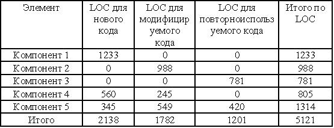
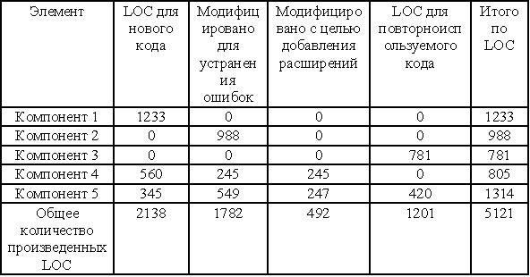
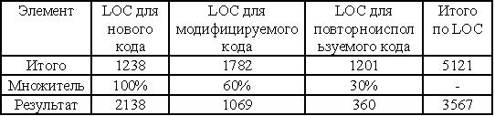
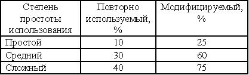
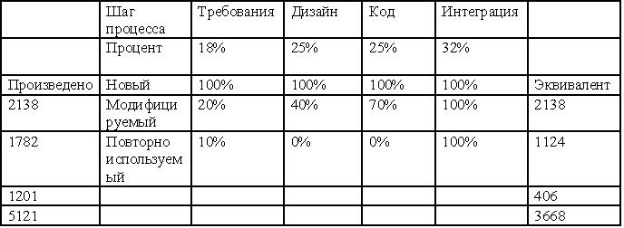

Влияние эффектов повторного использования на размер ПО
Многие программы происходят от предыдущих версий этих же программ. В результате может быть достигнута экономия средств и/или времени, а также возрасти уровень качества. Однако при повторном использовании могут расходоваться дополнительные средства и время, а уровень качества будет низким.
Повторному использованию подлежат: код, тестовый код, тестовые условия, тестовые процедуры, документация, дизайн, спецификации дизайна, спецификации требований и т.д.
Терминология повторного использования:
- Новый код - это код, разработанный для нового приложения, который не включает большие порции ранее написанного кода.
- Модифицируемый код- это код, разработанный для предыдущих приложений, который становился пригодным для использования в новым приложениях после внесения умеренного объема изменений.
- Повторно используемый код - это код, разработанный для предыдущих приложений, который будет пригодным для новых приложений без внесения каких-либо изменений.
- Наследственный код - это код, разработанный для предыдущих приложений, использование которого ожидается новым приложением.
Почему же код считается "модифицируемым" в случае, если он будет подвергаться лишь незначительным изменениям? Код, повторно используемый, в полном объеме, имеет идентичную документацию, идентичные тестовые процедуры и код, но лишь одну копию с целью поддержки библиотеки менеджмента конфигурирования. Даже если изменяется единственная строка комментария, две копии кода, тестовый код, документация и прочее должны поддерживаться в библиотеке управления конфигурированием. Если изменяется лишь одна строка исполняемого кода, подвергается изменению тестовый код и документация.
При использовании наследственного кода имейте в виду, что он может быть снабжен документацией плохого качества, могут отсутствовать тестовый код либо процедуры. Для этого кода может отсутствовать тщательно проработанный проект, и он может не отвечать стандартам качества.
Первый этап при оценке систем, которые могут повторно использовать код, заключается в отделении нового кода от модифицируемого и повторно используемого кода. Это необходимо по той причине, что модифицируемый и повторно используемый код практически никогда не может быть использован непосредственно, - для выполнения интеграции этого кода требуются некоторые изменения, в результате чего возрастает размер кода и объем трудозатрат, требуемых для реализации подобных изменений. Соответствующий пример приводится в таблице на рис.16.14.

Рисунок 16.14 - Разделение новых, модифицируемых и повторно используемых строк кода
А теперь возникает вопрос о том, как можно узнать, в какой степени компонент может быть модифицируемым или повторно используемым? Обратимся к компонентам 4 и 5 в таблице рис.16.15. Правило "большого пальца" говорит о необходимости проверки наименьшего уровня, известного для единицы либо модуля (обычно около 100 LOС). Если единица в целом не была изменена, она может "повторно использоваться". Если единица была изменена (пусть даже речь идет об одном комментарии или выполняемом операторе), она является "модифицируемой". Если более чем 50% кода единицы было изменено, рассматривайте ее как "новую". Кроме того, как только модифицируемый код был идентифицирован, его можно разбить на категории, представляющие тип модификации. Широко используемый подход заключается в том, чтобы отделять модификации, предназначенные для корректировки дефектов, от модификаций, направленных на добавление расширений. Как видно, таблицы рис.16.14 и 16.15 весьма похожи за исключением одного выполненного разделения.

Рисунок 16.15 - Различные типы модифицируемого кода
После завершения оценки общего объема разработанного программного кода повторно используемый код будет преобразован в "эквивалентный" новый код. В ходе процесса преобразования ставится цель минимизировать объем трудозатрат при внедрении повторно используемого или модифицируемого кода по сравнению с внедрением нового программного кода. Обычно определяется множитель преобразования с целью отражения количества трудозатрат, сэкономленных при повторном использовании кода. Предполагая наличие хронологического выравнивания множителей преобразования, можно заключить, что в этом случае выполняется простая калькуляция.
Возвращаясь к примеру рис.16.16, можно применить множители повторного использования, свидетельствующие о том, что при внедрении повторно используемого ПО экономится примерно 70% трудозатрат по сравнению с внедрением нового ПО.

Рисунок 16.16 - Применение множителей повторного использования
При использовании модифицируемых программ экономия составляет примерно 40%. Это говорит о том, что объем трудозатрат, требуемых при написании 5121 строк повторно используемого, модифицируемого и нового кода эквивалентен объему трудозатрат в случае написания 3567 строк нового кода.
Множители повторного использования вычисляются на основании опыта.
Множители, равные 30% (трудозатраты на создание повторно используемого кода) и 60% (трудозатраты на создание модифицируемого кода) наблюдаются в сотнях проектов. Однако в данном случае речь идет о средних значениях и возможный диапазон будет шире. Наилучшим индикатором достигаемого размера и понесенных трудозатрат в вашей организации являются фактические данные, полученные в ней, - отслеживайте оценки и фактические данные в хронологической базе данных. Типичные множители повторного использования приведены в таблице рис. 16.17.

Рисунок 16.17 - Типичные множители повторного использования
Будьте особенно внимательны при повторном использовании кода. Можно достичь большей точности при повторном использовании кода, если более внимательно присмотреться к процессу и повторно использовать характеристики.
Возвращаясь к нашему примеру, заметим, что первый шаг заключается в проверке процесса и в определении процента от общего количества трудозатрат, понесенных на каждом шаге разработки нового кода.
Предположим, нам известно о том, что данная организация тратит 18% своего времени на разработку требований, 25% времени - на дизайн, 25% времени - на кодирование и тестирование, а 32% времени - на выполнение интеграции (в данном примере рассматриваются лишь четыре фазы жизненного цикла).
Как показано в таблице рис. 16.18, на разработку нового кода уходит максимальное количество трудозатрат. В случае применения повторно используемого и модифицируемого кода трудозатраты будут меньшими. Отметим, что, вместо обычных 100%, модифицируемый код требует лишь 20% трудозатрат на этапе формулировки требований, а повторно используемый код - лишь 10% трудозатрат.
Вместо 100% трудозатрат на этапе разработки проекта, модифицируемое ПО требует 40% трудозатрат, а повторно используемое ПО вообще не нуждается в разработке проекта (0%). Показатель 40% появляется по той причине, что потребуется разработать план тестирования модифицируемого ПО, а также вполне возможно, что придется специальным образом переработать часть ПО. Таким образом отчетливо просматривается важность повторного использования.
Вместо 100% трудозатрат на этапе кодирования и тестирования единицы, необходимых при разработке новых программ, модифицируемое ПО требует лишь 70% трудозатрат, а повторно используемое ПО является полностью "свободным" от трудозатрат. При использовании "чистого", повторно используемого ПО данный показатель равен нулю. Если будет изменена лишь одна строка кода, все ПО будет считаться модифицируемым.
Трудозатраты по интеграции кода не будут сильно уменьшены даже в случае применения модифицируемого или повторно используемого кода. Даже в случае чистого повторно используемого кода трудозатраты по интеграции часто составляют 50%-100%. На каждой фазе процесса эффект от повторного использования кода может определяться после того, как установлено процентное значение для каждой повторно используемой категории.
В таблице рис. 16.18 демонстрируется, что включение повторно используемого либо модифицируемого кода в любом случае может привести к экономии размера, трудозатрат, времени по графику или затрат денежных средств.

Рисунок 16.18 - Применение метода точной оценки в повторно используемом или модифицируемом коде
Оценка трудозатрат
После того, как размер программного продукта был оценен, можно перейти к оценке трудозатрат, понесенных на производстве этого продукта.